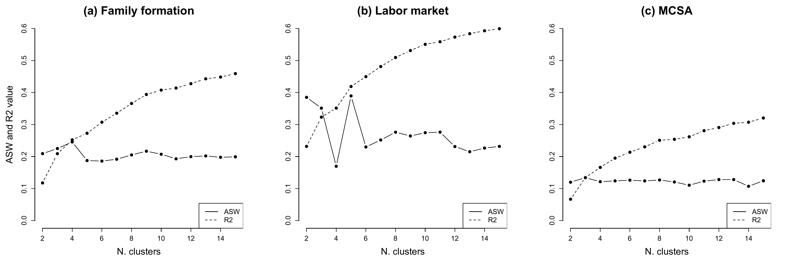
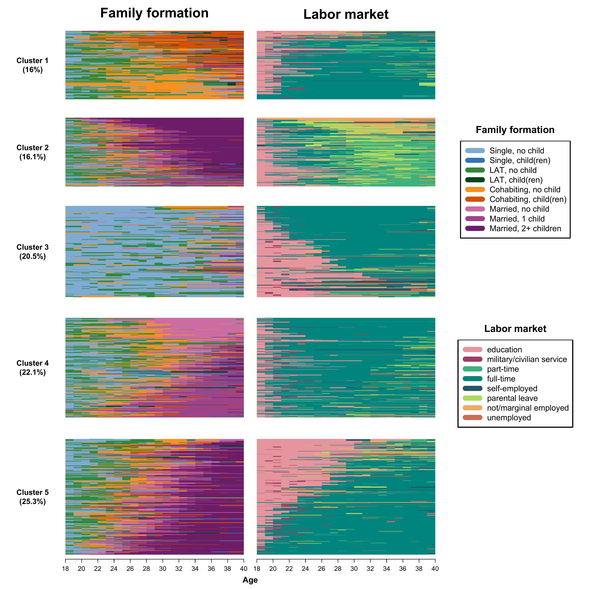

Chapter 5.5 Multichannel sequence analysis
readme.html and run
5-0_ChapterSetup.R. This will create
5-0_ChapterSetup.RData in the sub folder
data/R. This file contains the data required to produce the
plots shown below.legend_large_box to
your environment in order to render the tweaked version of the legend
described below. You find this file in the source folder of
the unzipped Chapter 5 archive.LoadInstallPackages.R# assuming you are working within .Rproj environment
library(here)
# install (if necessary) and load other required packages
source(here("source", "load_libraries.R"))
# load environment generated in "5-0_ChapterSetup.R"
load(here("data", "R", "5-0_ChapterSetup.RData"))
In chapter 5.3, we introduce the so-called multichannel sequence
analysis. We are now using the data.frame
multidim, which contains both family formation and labor
market sequences. Note that individual 1 in one pool of sequences has to
correspond to individual 1 in the other pool of sequences. The data come
from a sub-sample of the German Family Panel - pairfam. For further
information on the study and on how to access the full scientific use
file see here.
We use the ?seqdistmc command to compute the
multichannel dissimilarity matrix. We specify the option
channels with the sequences in the two domains stored in
mc.fam.year.seq and mc.act.year.seq. Notice
that here we give equal weight to the two channels by specifying the
option cweight as follows:
mcdist.om <- seqdistmc(channels=list(mc.fam.year.seq, mc.act.year.seq),
method="OM",
indel=1,
sm="CONSTANT",
cweight=c(1,1))After storing the MCSA dissimilarity matrix in the object
mcdist.om, we can use the ?wcKMedRange command
to perform a PAM clustering
mcdist.om.pam <- wcKMedRange(mcdist.om,
weights = multidim$weight40,
kvals = 2:10)From the object containing the values of the cluster quality indicators for different number of clusters, we extract the part of the output where the values for all indicators are stored:
mc.val<-mcdist.om.pam[[4]]We then select the 4th column - i.e., where the ASW values are stored…
mc.asw <- mc.val[,4]… and the 7th column - i.e., where the R2 values are stored
mc.r2 <- mc.val[,7]We use the same procedure on the pools of family formation and labor market trajectories separately
# Family formation trajectory
fam.pam.test <- wcKMedRange(mc.fam.year.om,
weights = multidim$weight40,
kvals = 2:15)
fam.val<-fam.pam.test[[4]]
fam.asw <- fam.val[,4]
fam.r2 <- fam.val[,7]
# Labor market trajectory
act.pam.test <- wcKMedRange(mc.act.year.om,
weights = multidim$weight40,
kvals = 2:15)
act.val<-act.pam.test[[4]]
act.asw <- act.val[,4]
act.r2 <- act.val[,7]We can now visualize the R2 and ASW trends across number of clusters. We first have to define the range of the x-axis to plot against the ASW/R2 values:
x <- 2:15We can now proceed with the graph
layout.fig1 <- layout(matrix(c(1,2,3), 1, 3, byrow = TRUE),
heights = c(1,1,1))
layout.show(layout.fig1)
par(mar = c(5, 5, 3, 3))
## Family formation
# ASW: include the first line
plot(x, fam.asw,
type = "b",
frame = FALSE, pch = 19,
main="(a) Family formation",
col = "black",
xlab = "N. clusters",
ylab = "ASW and R2 value",
ylim = c(0,0.6),
cex.main=2,
cex.lab=1.6,
cex.axis=1.2)
# R2: add a second line to the graph
lines(x, fam.r2,
pch = 19,
col = "black",
type = "b",
lty = 2)
# Add a legend to the plot
legend("bottomright",
legend=c("ASW", "R2"),
col=c("black", "black"),
lty = 1:2,
cex=1.2)
## Labor market
# ASW: include the first line
plot(x, act.asw,
type = "b",
frame = FALSE,
pch = 19,
main="(b) Labor market",
col = "black",
xlab = "N. clusters",
ylab = "",
ylim = c(0,0.6),
cex.main=2,
cex.lab=1.6,
cex.axis=1.2)
# R2: add a second line to the graph
lines(x, act.r2,
pch = 19,
col = "black",
type = "b",
lty = 2)
# Add a legend to the plot
legend("bottomright",
legend=c("ASW", "R2"),
col=c("black", "black"),
lty = 1:2,
cex=1.2)
## MCSA
# ASW: include the first line
plot(x, mc.asw,
type = "b",
frame = FALSE,
pch = 19,
main="(c) MCSA",
col = "black",
xlab = "N. clusters",
ylab = "",
ylim = c(0,0.6),
cex.main=2,
cex.lab=1.6,
cex.axis=1.2)
# R2: add a second line to the graph
lines(x, mc.r2,
pch = 19,
col = "black",
type = "b",
lty = 2)
# Add a legend to the plot
legend("bottomright",
legend=c("ASW", "R2"),
col=c("black", "black"),
lty = 1:2,
cex=1.2)
dev.off()
We use the joint dissimilarity matrix mcdist.om computed
above and for PAM clustering with Ward output to initialize the
procedure:
# Ward
mcdist.om.ward<-hclust(as.dist(mcdist.om),
method="ward.D",
members=multidim$weight40)
# PAM + Ward
mcdist.om.pam.ward <- wcKMedRange(mcdist.om,
weights = multidim$weight40,
kvals = 2:10,
initialclust = mcdist.om.ward)We extract 5 clusters and re-label them from 1 to 5 to replace the
medoid identifiers and attach the vector with the clusters to the main
data.frame multidim
mc <- mcdist.om.pam.ward$clustering$cluster5
mc.factor <- factor(mc, levels = c(16, 202, 439, 795, 892),
c("1", "2", "3", "4", "5"))
multidim$mc.factor <- as.numeric(mc.factor)To display the clusters for the two channels in parallel, we have to perform some steps to prepare the data. First, we generate subsets of sequences based on the clusters they have been allocated to. We do so for both channels:
# Family formation
fam1.seq <- mc.fam.year.seq[multidim$mc.factor == "1", ]
fam2.seq <- mc.fam.year.seq[multidim$mc.factor == "2", ]
fam3.seq <- mc.fam.year.seq[multidim$mc.factor == "3", ]
fam4.seq <- mc.fam.year.seq[multidim$mc.factor == "4", ]
fam5.seq <- mc.fam.year.seq[multidim$mc.factor == "5", ]
# Labor market
act1.seq <- mc.act.year.seq[multidim$mc.factor == "1", ]
act2.seq <- mc.act.year.seq[multidim$mc.factor == "2", ]
act3.seq <- mc.act.year.seq[multidim$mc.factor == "3", ]
act4.seq <- mc.act.year.seq[multidim$mc.factor == "4", ]
act5.seq <- mc.act.year.seq[multidim$mc.factor == "5", ]We then generate an object called relfreq that contains
the relative frequencies of the five clusters (using weights, see option
wt):
relfreq <- multidim %>%
count(mc.factor, wt = weight40) %>%
mutate(share = n/ sum(n)) %>%
arrange(share)We then convert relative frequencies to percentages (will be used for
labeling the y-axes) and store the information in the object
share
share <- round(as.numeric(relfreq$share)*100, 1)We can now plot the MCSA clusters, here sequences in each sub-graph are ordered by multidimensional scaling calculated on both channels
def.par <- par(no.readonly = TRUE)
# Each state disribution plot will be displayed according to its relative size
# as we add some additional rows to the cluster some adjustments are required
heights.mc <- c(.05,as.numeric(relfreq$share)*.97,.03)
widths.mc <- c(0.1, 0.325, 0.325, 0.25)
# Specifying the location of the many figures/elements we want to plot
layout.mc <- layout(matrix(c(1,2,3,21,
4,5,6,21,
7,8,9,22,
10,11,12,22,
13,14,15,23,
16,17,18,23,
19,20,20,23), 7, 4, byrow = TRUE),
widths = widths.mc,
heights = heights.mc)
layout.show(layout.mc)
# Labelling of the x-axes
count <- seq(from = 0, to = 22, by = 2)
years <- seq(from = 18, to = 40, by = 2)
# start with the actual graph...
# Row 1 - columns 1-3
par(mar = c(0.2,0,0.2,0))
plot(c(0, 1), c(0, 1), ann = F, bty = 'n', type = 'n', xaxt = 'n', yaxt = 'n')
plot(c(0, 1), c(0, 1), ann = F, bty = 'n', type = 'n', xaxt = 'n', yaxt = 'n')
text(x = 0.5, y = 0.5, paste0("Family formation"),
cex = 2.5, col = "black", font = 2)
plot(c(0, 1), c(0, 1), ann = F, bty = 'n', type = 'n', xaxt = 'n', yaxt = 'n')
text(x = 0.5, y = 0.5, paste0("Labor market"),
cex = 2.5, col = "black", font = 2)
# Row 2 - columns 1-3
par(mar = c(2,1,0,0))
plot(c(0, 1), c(0, 1), ann = F, bty = 'n', type = 'n', xaxt = 'n', yaxt = 'n')
text(x = 0.5, y = 0.5, paste0("Cluster 1\n","(",share[1], "%)"),
cex = 1.4, col = "black", font = 2)
par(mar = c(2,1,0,1))
seqIplot(mc.fam.year.seq[multidim$mc.factor == relfreq$mc.factor[1],],
sortv = cmdscale(mcdist.om[multidim$mc.factor == relfreq$mc.factor[1],
multidim$mc.factor == relfreq$mc.factor[1]], k = 2),
with.legend = FALSE, border = NA,
axes = FALSE, yaxis = FALSE, ylab = "")
seqIplot(mc.act.year.seq[multidim$mc.factor == relfreq$mc.factor[1],]
, sortv = cmdscale(mcdist.om[multidim$mc.factor == relfreq$mc.factor[1],
multidim$mc.factor == relfreq$mc.factor[1]], k = 2)
, with.legend = FALSE, border = NA,
axes = FALSE, yaxis = FALSE, ylab = "")
# Row 3 - columns 1-3
par(mar = c(2,1,0,0))
plot(c(0, 1), c(0, 1), ann = F, bty = 'n', type = 'n', xaxt = 'n', yaxt = 'n')
text(x = 0.5, y = 0.5, paste0("Cluster 2\n","(",share[2], "%)"),
cex = 1.4, col = "black", font = 2)
par(mar = c(2,1,0,1))
seqIplot(mc.fam.year.seq[multidim$mc.factor == relfreq$mc.factor[2],],
sortv = cmdscale(mcdist.om[multidim$mc.factor == relfreq$mc.factor[2],
multidim$mc.factor == relfreq$mc.factor[2]], k = 2),
with.legend = FALSE, border = NA,
axes = FALSE, yaxis = FALSE, ylab = "")
seqIplot(mc.act.year.seq[multidim$mc.factor == relfreq$mc.factor[2],]
, sortv = cmdscale(mcdist.om[multidim$mc.factor == relfreq$mc.factor[2],
multidim$mc.factor == relfreq$mc.factor[2]], k = 2)
, with.legend = FALSE, border = NA,
axes = FALSE, yaxis = FALSE, ylab = "")
# Row 4 - columns 1-3
par(mar = c(2,1,0,0))
plot(c(0, 1), c(0, 1), ann = F, bty = 'n', type = 'n', xaxt = 'n', yaxt = 'n')
text(x = 0.5, y = 0.5, paste0("Cluster 3\n","(",share[3], "%)"),
cex = 1.4, col = "black", font = 2)
par(mar = c(2,1,0,1))
seqIplot(mc.fam.year.seq[multidim$mc.factor == relfreq$mc.factor[3],],
sortv = cmdscale(mcdist.om[multidim$mc.factor == relfreq$mc.factor[3],
multidim$mc.factor == relfreq$mc.factor[3]], k = 2)
, with.legend = FALSE, border = NA,
axes = FALSE, yaxis = FALSE, ylab = "")
seqIplot(mc.act.year.seq[multidim$mc.factor == relfreq$mc.factor[3],]
, sortv = cmdscale(mcdist.om[multidim$mc.factor == relfreq$mc.factor[3],
multidim$mc.factor == relfreq$mc.factor[3]], k = 2)
, with.legend = FALSE, border = NA,
axes = FALSE, yaxis = FALSE, ylab = "")
# Row 5 - columns 1-3
par(mar = c(2,1,0,0))
plot(c(0, 1), c(0, 1), ann = F, bty = 'n', type = 'n', xaxt = 'n', yaxt = 'n')
text(x = 0.5, y = 0.5, paste0("Cluster 4\n","(",share[4], "%)"),
cex = 1.4, col = "black", font = 2)
par(mar = c(2,1,0,1))
seqIplot(mc.fam.year.seq[multidim$mc.factor == relfreq$mc.factor[4],],
sortv = cmdscale(mcdist.om[multidim$mc.factor == relfreq$mc.factor[4],
multidim$mc.factor == relfreq$mc.factor[4]], k = 2)
, with.legend = FALSE, border = NA,
axes = FALSE, yaxis = FALSE, ylab = "")
seqIplot(mc.act.year.seq[multidim$mc.factor == relfreq$mc.factor[4],]
, sortv = cmdscale(mcdist.om[multidim$mc.factor == relfreq$mc.factor[4],
multidim$mc.factor == relfreq$mc.factor[4]], k = 2)
, with.legend = FALSE, border = NA,
axes = FALSE, yaxis = FALSE, ylab = "")
# Row 6 - columns 1-3
par(mar = c(2,1,0,0))
plot(c(0, 1), c(0, 1), ann = F, bty = 'n', type = 'n', xaxt = 'n', yaxt = 'n')
text(x = 0.5, y = 0.5, paste0("Cluster 5\n","(",share[5], "%)"),
cex = 1.4, col = "black", font = 2)
par(mar = c(2,1,0,1))
seqIplot(mc.fam.year.seq[multidim$mc.factor == relfreq$mc.factor[5],],
sortv = cmdscale(mcdist.om[multidim$mc.factor == relfreq$mc.factor[5],
multidim$mc.factor == relfreq$mc.factor[5]], k = 2)
, with.legend = FALSE, border = NA,
axes = FALSE, yaxis = FALSE, ylab = "")
axis(1, at=(seq(0,22, by = 2)), labels = seq(18,40, by = 2), font = 1, cex.axis = 1.2, lwd = 1)
seqIplot(mc.act.year.seq[multidim$mc.factor == relfreq$mc.factor[5],]
, sortv = cmdscale(mcdist.om[multidim$mc.factor == relfreq$mc.factor[5],
multidim$mc.factor == relfreq$mc.factor[5]], k = 2)
, with.legend = FALSE, border = NA,
axes = FALSE, yaxis = FALSE, ylab = "")
axis(1, at = count, labels = years, font = 1, cex.axis = 1.2, lwd = 1)
# Row 7 - columns 1-3
par(mar = c(0.2,0,0.2,0))
plot(c(0, 1), c(0, 1), ann = F, bty = 'n', type = 'n', xaxt = 'n', yaxt = 'n')
plot(c(0, 1), c(0, 1), ann = F, bty = 'n', type = 'n', xaxt = 'n', yaxt = 'n')
text(x = 0.5, y = 0.5, paste0("Age"),
cex = 1.5, col = "black", font = 2)
# Column 4
par(mar = c(0.2,0,0.2,0))
plot(c(0, 1), c(0, 1), ann = F, bty = 'n', type = 'n', xaxt = 'n', yaxt = 'n')
par(mar = c(4,1,4,1))
plot(1, type = "n", axes = FALSE, xlab = "", ylab = "")
legend(x = "top",inset = 0, legend = longlab.partner.child, col = colspace.partner.child,
lwd = 10, cex = 1.5, ncol = 1, box.lwd = 2)
mtext("Family formation",side = 3, line = 1, cex = 1.2, font = 2)
plot(1, type = "n", axes = FALSE, xlab = "", ylab = "")
legend(x = "top",inset = 0, legend = longlab.activity, col = colspace.activity,
lwd = 10, cex = 1.5, ncol = 1, box.lwd = 2)
mtext("Labor market",side = 3, line = 1, cex = 1.2, font = 2)
par(def.par)
dev.off()
For the code necessary to order the sequences based on the family
trajectories only, see the R-code “5-5_Fig5-2_MCSA_colors_mds_family.R”
in the folder “Chapter05.zip” at the download page. There you also find
an alternative approach to the plot shown above using
ggseqplot::ggseqiplot instead of
TraMineR::seqIplot (see here for the corresponding
tutorial)
If you see mistakes or want to suggest changes, please create an issue on the source repository.
Text and figures are licensed under Creative Commons Attribution CC BY-NC 4.0. Source code is available at https://github.com/sa-book/sa-book.github.io, unless otherwise noted. The figures that have been reused from other sources don't fall under this license and can be recognized by a note in their caption: "Figure from ...".